Clase 7 Redes neuronales (parte 1)
7.1 Introducción a redes neuronales
En la parte anterior, vimos cómo hacer más flexibles los métodos de regresión: la idea es construir entradas derivadas a partir de las variables originales, e incluirlas en el modelo de regresión. Este enfoque es bueno cuando tenemos relativamente pocas variables originales de entrada, y tenemos una idea de qué variables derivadas es buena idea incluir (por ejemplo, splines para una variable como edad, interacciones para variables importantes, etc). Sin embargo, si hay una gran cantidad de entradas, esta técnica puede ser prohibitiva en términos de cálculo y trabajo manual.
Por ejemplo, si tenemos unas 100 entradas numéricas, al crear todas las interacciones \(x_i x_j\) y los cuadrados \(x_i^2\) terminamos con unas 5150 variables. Para el problema de dígitos (256 entradas o pixeles) terminaríamos con unas 32 mil entradas adicionales. Aún cuando es posible regularizar, en estos casos suena más conveniente construir entradas derivadas a partir de los datos.
Para hacer esto, consideramos entradas \(X_1, . . . , X_p\), y supongamos que tenemos un problema de clasificación binaria, con \(G = 1\) o \(G = 0\). Aunque hay muchas maneras de construir entradas derivadas, una manera simple sería construir \(m\) nuevas entradas mediante:
\[a_k = h \left ( \theta_{k,0} + \sum_{j=1}^p \theta_{k,j}x_j \right)\]
para \(k=1,\ldots, m\), donde \(h\) es la función logística, y las \(\theta\) son parámetros que seleccionaremos más tarde.
Modelamos ahora la probabilidad de clase 1 con regresión logística -pero en lugar de usar las entradas originales X usamos las entradas derivadas \(a_1, . . . , a_m\): \[p_1(x) = h \left ( \beta_0 + \sum_{j=1}^m \beta_ja_j \right)\]
Podemos representar este esquema con una red dirigida (\(m=3\) variables derivadas):
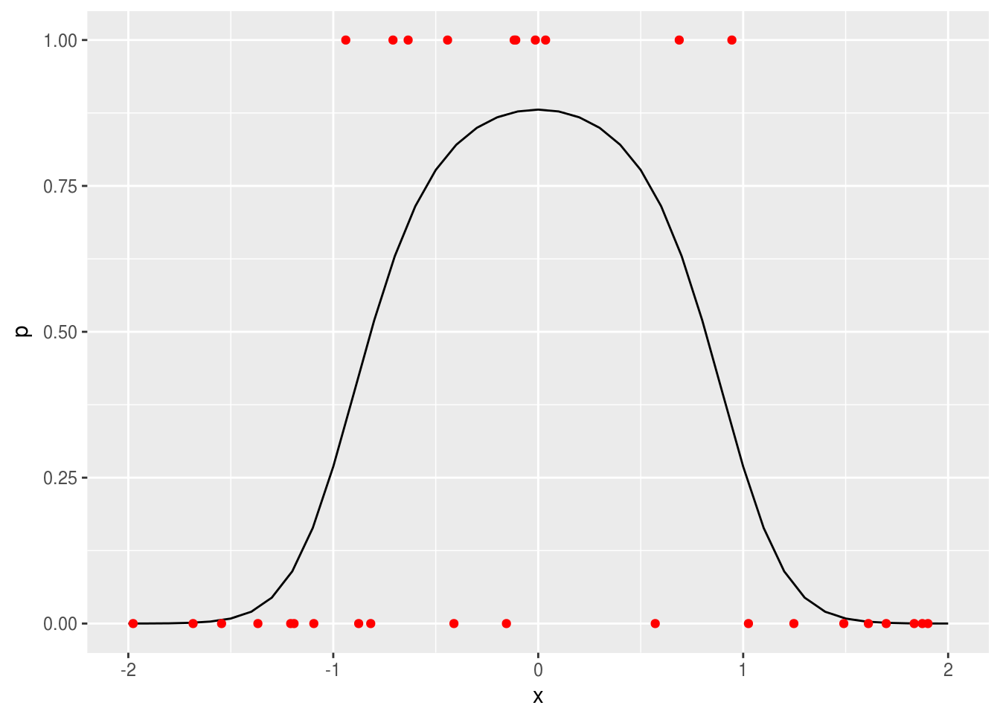
Observaciones:
- ¿Por qué usar \(h\) para las entradas derivadas \(a_k\)? En primer lugar, nótese que si no transformamos con alguna función no lineal \(h\), el modelo final \(p_1\) para la probabilidad condicional es el mismo que el de regresión logística (combinaciones lineales de combinaciones lineales son combinaciones lineales). Sin embargo, al transformar con \(h\), las \(x_j\) contribuyen de manera no lineal a las entradas derivadas.
- Las variables \(a_k\) que se pueden obtener son similares (para una variable de entrada) a los I-splines que vimos en la parte anterijor.
- Es posible demostrar que si se crean suficientes entradas derivadas (\(m\) es suficientemente grande), entonces la función \(p_1(x)\) puede aproximar cualquier función continua. La función \(h\) (que se llama función de activación no es especial: funciones continuas con forma similar a la sigmoide (logística) pueden usarse también (por ejemplo, arcotangente, o lineal rectificada). La idea es que cualquier función se puede aproximar mediante superposición de funciones tipo sigmoide (ver por ejemplo Cybenko 1989, Approximation by Superpositions of a Sigmoidal Function).
¿Cómo construyen entradas las redes neuronales?
Comencemos por un ejemplo simple de clasificación binaria con una sola entrada \(x\). Supondremos que el modelo verdadero está dado por:
h <- function(x){
1/(1 + exp(-x)) # es lo mismo que exp(x)/(1 + exp(x))
}
x <- seq(-2, 2, 0.1)
p <- h(2 - 3 * x^2) #probabilidad condicional de clase 1 (vs. 0)
set.seed(2805721)
x_1 <- runif(30, -2, 2)
g_1 <- rbinom(30, 1, h(2 - 3 * x_1^2))
datos <- data.frame(x_1, g_1)
dat_p <- data.frame(x, p)
g <- qplot(x, p, geom='line')
g + geom_point(data = datos, aes(x = x_1, y = g_1), colour = 'red')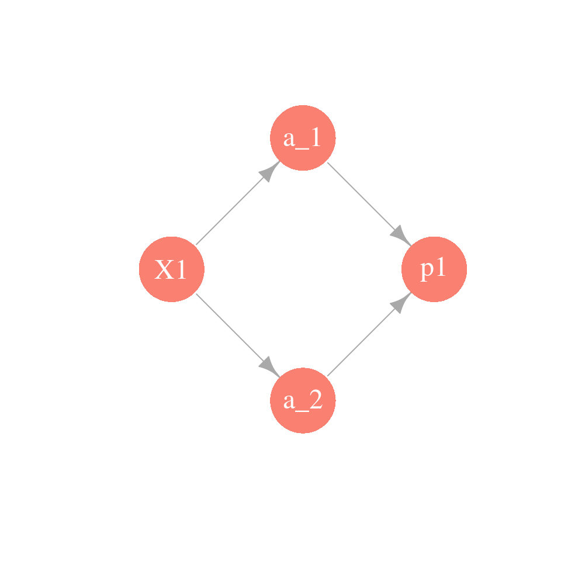
donde adicionalmente graficamos 30 datos simulados. Recordamos que queremos ajustar la curva roja, que da la probabilidad condicional de clase. Podríamos ajustar un modelo de regresión logística expandiendo el espacio de entradas agregando \(x^2\), y obtendríamos un ajuste razonable.
La idea aquí es que podemos crear entradas derivadas de forma automática. Suponamos entonces que pensamos crear dos entradas \(a_1\) y \(a_2\), funciones de \(x_1\), y luego predecir \(g.1\), la clase, en función de estas dos entradas. Por ejemplo, podríamos tomar:
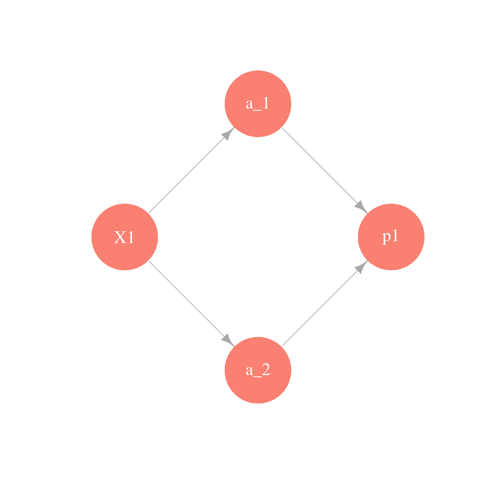
donde hacemos una regresión logística para predecir \(G\) mediante \[p_1(a) = h(\beta_0 + \beta_1a_1+\beta_2 a_2),\] \(a_1\) y \(a_2\) están dadas por \[a_1(x)=h(\beta_{1,0} + \beta_{1,1} x_1),\] \[a_2(x)=h(\beta_{2,0} + \beta_{2,1} x_1).\]
Por ejemplo, podríamos tomar
a_1 <- h( 1 + 2*x) # 2(x+1/2)
a_2 <- h(-1 + 2*x) # 2(x-1/2) # una es una versión desplazada de otra.Las funciones \(a_1\) y \(a_2\) dependen de \(x\) de la siguiente forma:
dat_a <- data.frame(x = x, a_1 = a_1, a_2 = a_2)
dat_a_2 <- dat_a %>% gather(variable, valor, a_1:a_2)
ggplot(dat_a_2, aes(x=x, y=valor, colour=variable, group=variable)) + geom_line()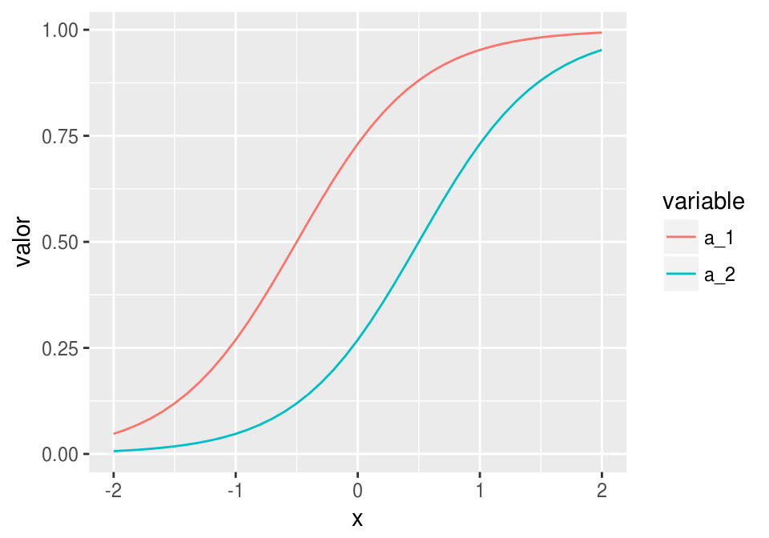
Si las escalamos y sumamos, obtenemos
dat_a <- data.frame(x=x, a_1=-4+12*a_1, a_2=-12*a_2, suma=-4+12*a_1-12*a_2)
dat_a_2 <- dat_a %>% gather(variable, valor, a_1:suma)
ggplot(dat_a_2, aes(x=x, y=valor, colour=variable, group=variable)) + geom_line()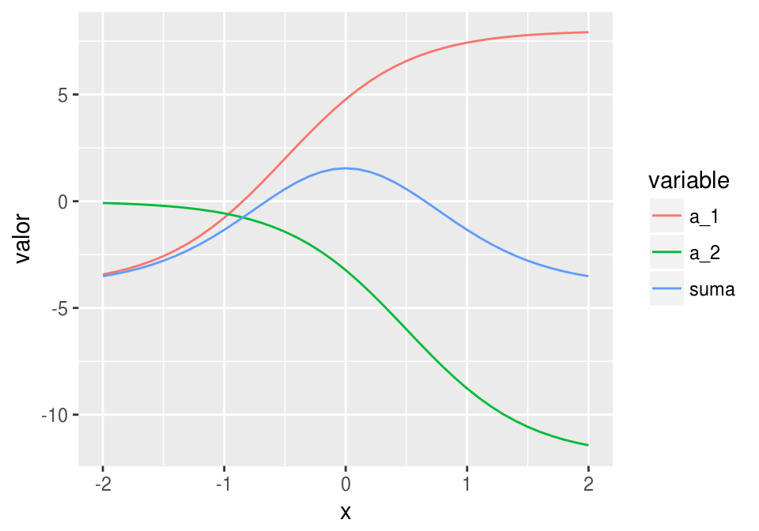
y finalmente, aplicando \(h\):
dat_2 <- data.frame(x, p2=h(-4 + 12*a_1 - 12*a_2))
ggplot(dat_2, aes(x=x, y=p2)) + geom_line()+
geom_line(data=dat_p, aes(x=x,y=p), col='red') +ylim(c(0,1))+
geom_point(data = datos, aes(x=x_1,y=g_1))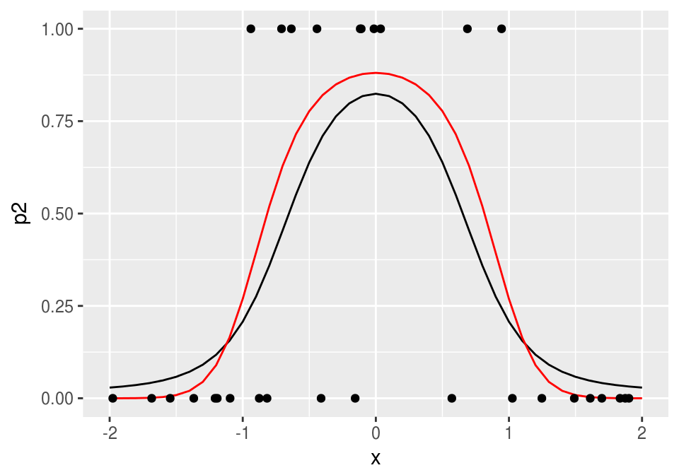 que da un ajuste razonable. Este es un ejemplo de cómo la mezcla de dos funciones logísticas puede replicar esta función con forma de chipote.
¿Cómo ajustar los parámetros?
Para encontrar los mejores parámetros, minimizamos la devianza sobre los parámetros \(\beta_0,\beta_1,\beta_{1,0},\beta_{1,1}, \beta_{2,0},\beta_{2,1}\).
Veremos más adelante que conviene hacer esto usando descenso o en gradiente o descenso en gradiente estocástico, pero por el momento usamos la función optim de R para minimizar la devianza. En primer lugar, creamos una función que para todas las entradas calcula los valores de salida. En esta función hacemos feed-forward de las entradas a través de la red para calcular la salida
## esta función calcula los valores de cada nodo en toda la red,
## para cada entrada
feed_fow <- function(beta, x){
a_1 <- h(beta[1] + beta[2]*x) # calcula variable 1 de capa oculta
a_2 <- h(beta[3] + beta[4]*x) # calcula variable 2 de capa oculta
p <- h(beta[5]+beta[6]*a_1 + beta[7]*a_2) # calcula capa de salida
p
}Nótese que simplemente seguimos el diagrama mostrado arriba para hacer los cálculos, combinando linealmente las entradas en cada capa.
Ahora definimos una función para calcular la devianza. Conviene crear una función que crea funciones, para obtener una función que sólo se evalúa en los parámetros para cada conjunto de datos de entrenamiento fijos:
devianza_fun <- function(x, y){
# esta función es una fábrica de funciones
devianza <- function(beta){
p <- feed_fow(beta, x)
- 2 * mean(y*log(p) + (1-y)*log(1-p))
}
devianza
}Por ejemplo:
dev <- devianza_fun(x_1, g_1) # crea función dev
## ahora dev toma solamente los 7 parámetros beta:
dev(c(0,0,0,0,0,0,0))## [1] 1.386294Finalmente, optimizamos la devianza. Para esto usaremos la función optim de R:
set.seed(5)
salida <- optim(rnorm(7), dev, method='BFGS') # inicializar al azar punto inicial
salida## $par
## [1] -24.8192568 23.0201169 -8.4364869 -6.7633494 0.9849461 -14.0157655
## [7] -14.3394673
##
## $value
## [1] 0.654347
##
## $counts
## function gradient
## 103 100
##
## $convergence
## [1] 1
##
## $message
## NULLbeta <- salida$parY ahora podemos graficar con el vector \(\beta\) encontrado:
## hacer feed forward con beta encontrados
p_2 <- feed_fow(beta, x)
dat_2 <- data.frame(x, p_2 = p_2)
ggplot(dat_2, aes(x = x, y = p_2)) + geom_line()+
geom_line(data = dat_p, aes(x = x, y = p), col='red') +ylim(c(0,1))+
geom_point(data = datos, aes(x = x_1, y = g_1))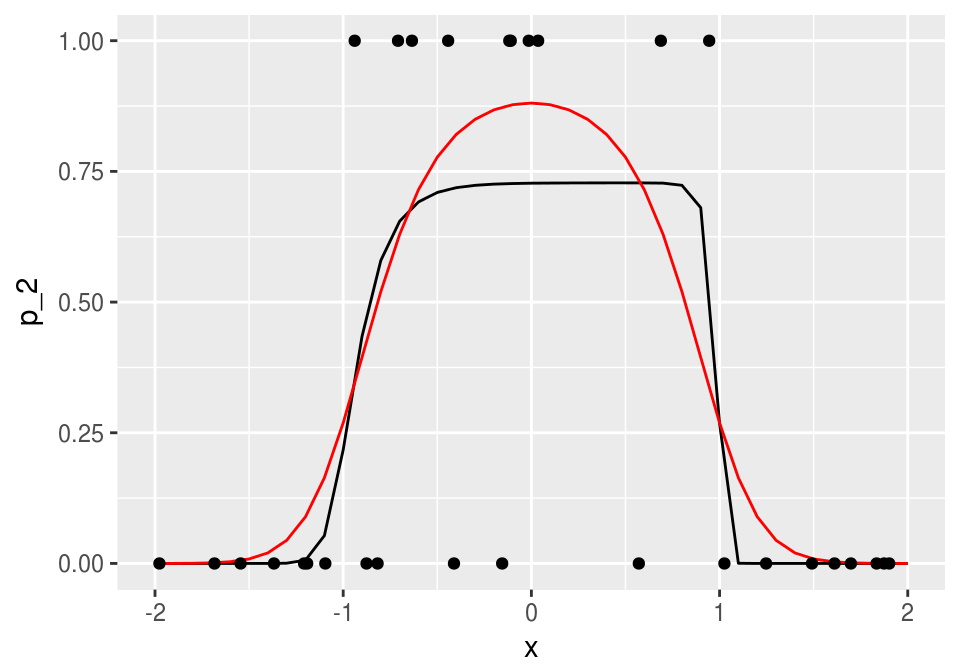 Los coeficientes estimados, que en este caso muchas veces se llaman pesos, son:
beta## [1] -24.8192568 23.0201169 -8.4364869 -6.7633494 0.9849461 -14.0157655
## [7] -14.3394673que parecen ser muy grandes. Igualmente, de la figura vemos que el ajuste no parece ser muy estable (esto se puede confirmar corriendo con distintos conjuntos de entrenamiento). Podemos entonces regularizar ligeramente la devianza para resolver este problema. En primer lugar, definimos la devianza regularizada (ridge):
devianza_reg <- function(x, y, lambda){
# esta función es una fábrica de funciones
devianza <- function(beta){
p <- feed_fow(beta, x)
# en esta regularizacion quitamos sesgos, pero puede hacerse también con sesgos.
- 2 * mean(y*log(p) + (1-y)*log(1-p)) + lambda*sum(beta[-c(1,3,5)]^2)
}
devianza
}dev_r <- devianza_reg(x_1, g_1, 0.001) # crea función dev
set.seed(5)
salida <- optim(rnorm(7), dev_r, method='BFGS') # inicializar al azar punto inicial
salida## $par
## [1] -4.826652 4.107146 -4.845864 -4.561488 1.067216 -5.236453 -5.195981
##
## $value
## [1] 0.8322745
##
## $counts
## function gradient
## 102 100
##
## $convergence
## [1] 1
##
## $message
## NULLbeta <- salida$par
dev(beta)## [1] 0.74018p_2 <- feed_fow(beta, x)
dat_2 <- data.frame(x, p_2 = p_2)
ggplot(dat_2, aes(x = x, y = p_2)) + geom_line()+
geom_line(data = dat_p, aes(x = x, y = p), col='red') +ylim(c(0,1))+
geom_point(data = datos, aes(x = x_1, y = g_1))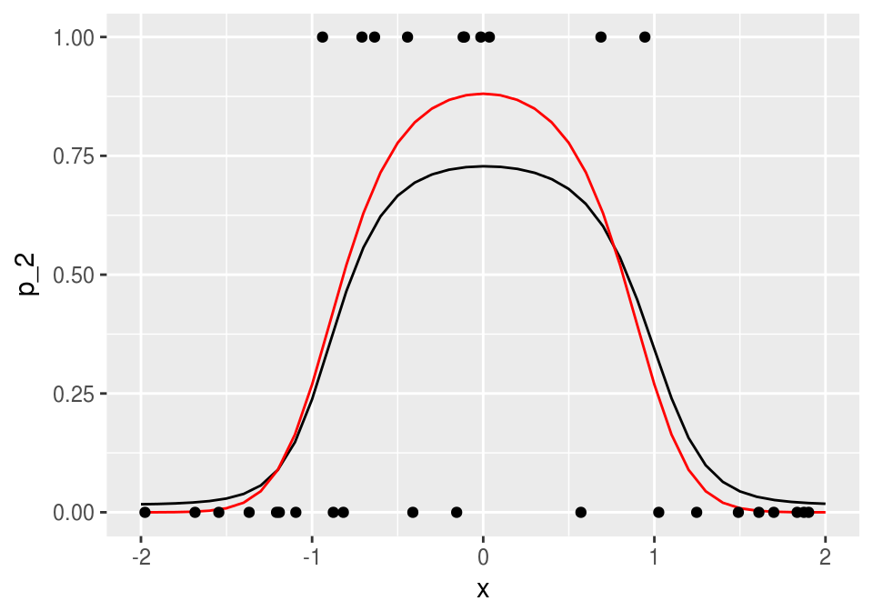
y obtenemos un ajuste mucho más estable. Podemos también usar la función nnet del paquete nnet. Ojo: en nnet, el error es la devianza no está normalizada por número de casos y dividida entre dos:
library(nnet)
set.seed(12)
nn <- nnet(g_1 ~ x_1, data=datos, size = 2, decay=0.0, entropy = T)## # weights: 7
## initial value 19.318858
## iter 10 value 11.967705
## iter 20 value 10.251964
## iter 30 value 9.647707
## iter 40 value 9.573030
## iter 50 value 9.569389
## iter 60 value 9.555125
## iter 70 value 9.546210
## iter 80 value 9.544512
## iter 90 value 9.539825
## iter 100 value 9.535977
## final value 9.535977
## stopped after 100 iterationsnn$wts## [1] -51.274012 48.789640 8.764849 6.219901 -29.155181 -24.998108
## [7] 30.125349nn$value## [1] 9.5359772*nn$value/30## [1] 0.6357318dev(nn$wts) ## [1] 0.6357318qplot(x, predict(nn, newdata=data.frame(x_1 = x)), geom='line')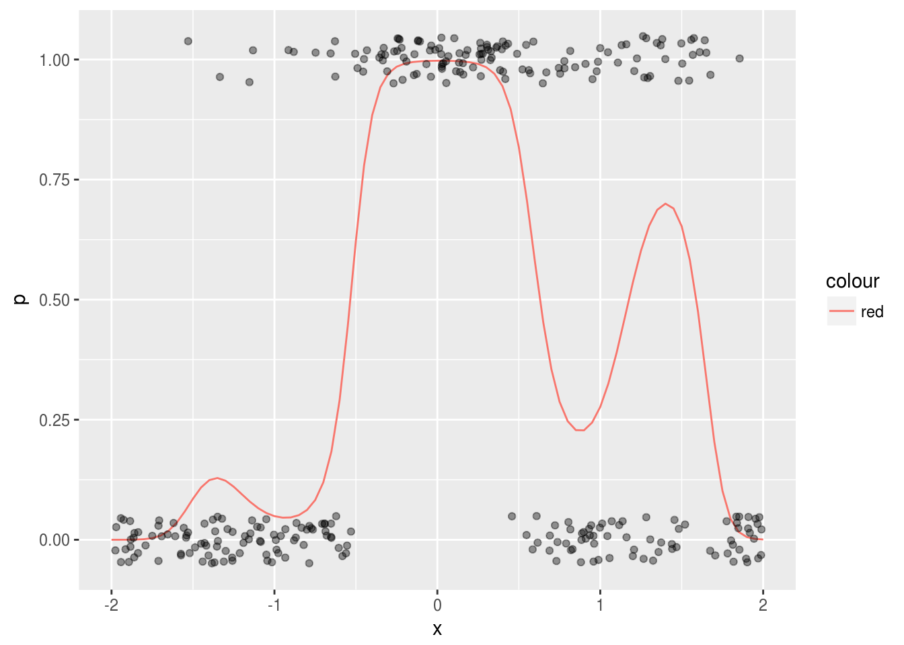
7.1.0.1 Ejercicio
Un ejemplo más complejo. Utiliza los siguientes datos, y agrega si es necesario variables derivadas \(a_3,a_4\) en la capa oculta.
h <- function(x){
exp(x)/(1+exp(x))
}
x <- seq(-2,2,0.05)
p <- h(3 + x- 3*x^2 + 3*cos(4*x))
set.seed(280572)
x.2 <- runif(300, -2, 2)
g.2 <- rbinom(300, 1, h(3 + x.2- 3*x.2^2 + 3*cos(4*x.2)))
datos <- data.frame(x.2,g.2)
dat.p <- data.frame(x,p)
g <- qplot(x,p, geom='line', col='red')
g + geom_jitter(data = datos, aes(x=x.2,y=g.2), col ='black',
position =position_jitter(height=0.05), alpha=0.4)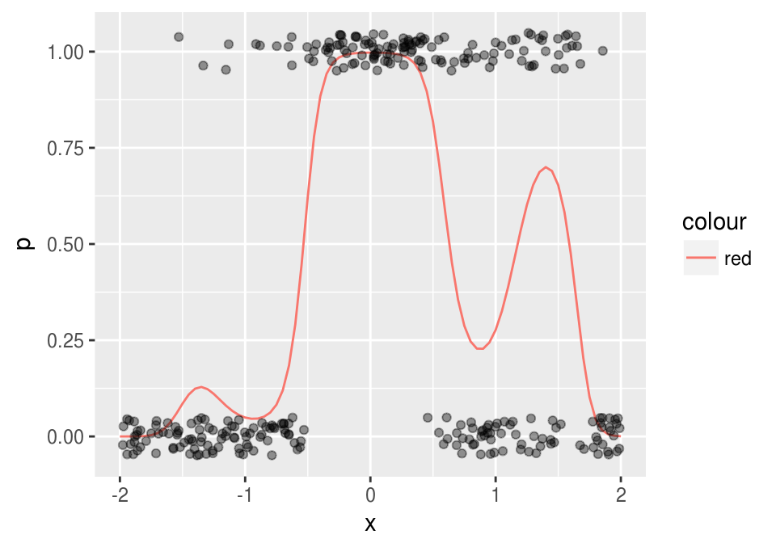
7.2 Interacciones en redes neuronales
Es posible capturar interacciones con redes neuronales. Consideremos el siguiente ejemplo simple:
p <- function(x1, x2){
h(-5 + 10*x1 + 10*x2 - 30*x1*x2)
}
dat <- expand.grid(x1 = seq(0, 1, 0.05), x2 = seq(0, 1, 0.05))
dat <- dat %>% mutate(p = p(x1, x2))
ggplot(dat, aes(x=x1, y=x2)) + geom_tile(aes(fill=p))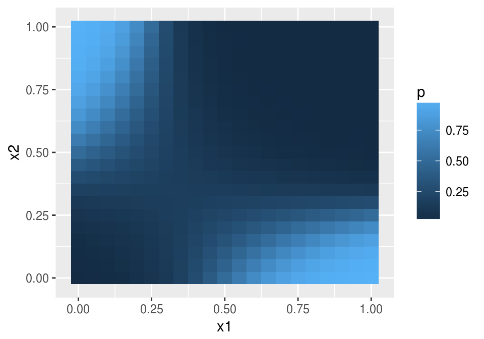
Esta función puede entenderse como un o exclusivo: la probabilidad es alta sólo cuando x1 y x2 tienen valores opuestos (x1 grande pero x2 chica y viceversa). No es posible modelar esta función mediante el modelo logístico (sin interacciones).
Sin embargo, podemos incluir la interacción en el modelo logístico o intentar usar una red neuronal. Primero simulamos unos datos y probamos el modelo logístico con y sin interacciones:
set.seed(322)
n <- 500
dat_ent <- data_frame(x1=runif(n,0,1), x2 = runif(n, 0, 1)) %>%
mutate(p = p(x1, x2)) %>%
mutate(y = rbinom(n, 1, p))
mod_1 <- glm(y ~ x1 + x2, data = dat_ent, family = 'binomial')
mod_1##
## Call: glm(formula = y ~ x1 + x2, family = "binomial", data = dat_ent)
##
## Coefficients:
## (Intercept) x1 x2
## -0.01011 -1.47942 -1.19196
##
## Degrees of Freedom: 499 Total (i.e. Null); 497 Residual
## Null Deviance: 529.4
## Residual Deviance: 504.5 AIC: 510.5table(predict(mod_1) > 0.5, dat_ent$y)##
## 0 1
## FALSE 389 111mod_2 <- glm(y ~ x1 + x2 + x1:x2, data = dat_ent, family = 'binomial')
mod_2##
## Call: glm(formula = y ~ x1 + x2 + x1:x2, family = "binomial", data = dat_ent)
##
## Coefficients:
## (Intercept) x1 x2 x1:x2
## -4.726 9.641 9.831 -32.466
##
## Degrees of Freedom: 499 Total (i.e. Null); 496 Residual
## Null Deviance: 529.4
## Residual Deviance: 305.6 AIC: 313.6table(predict(mod_2) > 0.5, dat_ent$y)##
## 0 1
## FALSE 374 60
## TRUE 15 51Observese la gran diferencia de devianza entre los dos modelos (en este caso, el sobreajuste no es un problema).
Ahora consideramos qué red neuronal puede ser apropiada
set.seed(11)
nn <- nnet(y ~ x1 + x2, data = dat_ent, size = 3, decay = 0.001,
entropy = T, maxit = 500)## # weights: 13
## initial value 294.186925
## iter 10 value 233.560013
## iter 20 value 195.096851
## iter 30 value 190.466423
## iter 40 value 184.454612
## iter 50 value 170.767082
## iter 60 value 156.347417
## iter 70 value 153.521658
## iter 80 value 153.069566
## iter 90 value 152.852374
## iter 100 value 152.835812
## iter 110 value 152.826924
## iter 120 value 152.825819
## final value 152.825815
## converged#primera capa
matrix(round(nn$wts[1:9], 1), 3,3, byrow=T)## [,1] [,2] [,3]
## [1,] -2.2 3.0 -2.4
## [2,] -8.2 5.9 8.7
## [3,] -2.7 -1.6 3.6#segunda capa
round(nn$wts[10:13], 1)## [1] -5.7 15.1 -8.6 19.8#2*nn$valueEl cálculo de esta red es:
feed_fow <- function(beta, x){
a_1 <- h(beta[1] + beta[2]*x[1] + beta[3]*x[2])
a_2 <- h(beta[4] + beta[5]*x[1] + beta[6]*x[2])
a_3 <- h(beta[7] + beta[8]*x[1] + beta[9]*x[2])
p <- h(beta[10]+beta[11]*a_1 + beta[12]*a_2 + beta[13]*a_3) # calcula capa de salida
p
}Y vemos que esta red captura la interacción:
feed_fow(nn$wts, c(0,0))## [1] 0.04946031feed_fow(nn$wts, c(0,1))## [1] 0.9560235feed_fow(nn$wts, c(1,0))## [1] 0.9830594feed_fow(nn$wts, c(1,1))## [1] 0.004197137dat <- dat %>% rowwise %>% mutate(p_red = feed_fow(nn$wts, c(x1, x2)))
ggplot(dat, aes(x=x1, y=x2)) + geom_tile(aes(fill=p_red))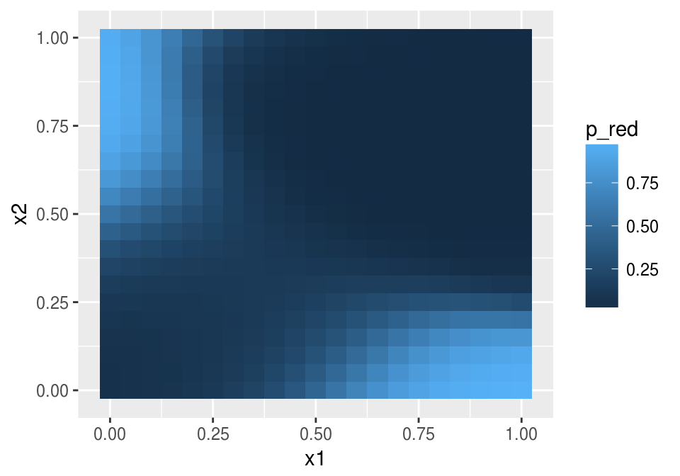
Observación: ¿cómo funciona esta red? Consideremos la capa intermedia
dat_entrada <- data_frame(x_1=c(0,0,1,1), x_2=c(0,1,0,1))
a_1 <- dat_entrada %>% rowwise() %>% mutate(a_1= h(sum(nn$wts[1:3]*c(1,x_1,x_2) )))
a_2 <- dat_entrada %>% rowwise() %>% mutate(a_2= h(sum(nn$wts[4:6]*c(1,x_1,x_2) )))
a_3 <- dat_entrada %>% rowwise() %>% mutate(a_3= h(sum(nn$wts[7:9]*c(1,x_1,x_2) )))
capa_intermedia <- left_join(a_1, a_2) %>% left_join(a_3)## Joining, by = c("x_1", "x_2")
## Joining, by = c("x_1", "x_2")a_1## Source: local data frame [4 x 3]
## Groups: <by row>
##
## # A tibble: 4 x 3
## x_1 x_2 a_1
## <dbl> <dbl> <dbl>
## 1 0 0 0.10233895
## 2 0 1 0.01014846
## 3 1 0 0.68556319
## 4 1 1 0.16392998a_3## Source: local data frame [4 x 3]
## Groups: <by row>
##
## # A tibble: 4 x 3
## x_1 x_2 a_3
## <dbl> <dbl> <dbl>
## 1 0 0 0.06285298
## 2 0 1 0.70876776
## 3 1 0 0.01302357
## 4 1 1 0.32378386a_2## Source: local data frame [4 x 3]
## Groups: <by row>
##
## # A tibble: 4 x 3
## x_1 x_2 a_2
## <dbl> <dbl> <dbl>
## 1 0 0 0.0002839063
## 2 0 1 0.6213605990
## 3 1 0 0.0959812149
## 4 1 1 0.9983727125Y observamos que las unidades \(a_1\) y \(a_3\) tienen valor alto cuando las variables \(x_1\) y \(x_2\), correspondientemente, tienen valores altos. La unidad \(a_2\) responde cuando tanto como \(x_1\)y \(x_2\) tienen valores altos.
Para la capa final, tenemos que:
nn$wts[10:13]## [1] -5.747250 15.138708 -8.628917 19.801144capa_final <- capa_intermedia %>% rowwise() %>%
mutate(p= h(sum(nn$wts[10:13]*c(1,a_1,a_2,a_3) ))) %>%
mutate(p=round(p,2))
capa_final## Source: local data frame [4 x 6]
## Groups: <by row>
##
## # A tibble: 4 x 6
## x_1 x_2 a_1 a_2 a_3 p
## <dbl> <dbl> <dbl> <dbl> <dbl> <dbl>
## 1 0 0 0.10233895 0.0002839063 0.06285298 0.05
## 2 0 1 0.01014846 0.6213605990 0.70876776 0.96
## 3 1 0 0.68556319 0.0959812149 0.01302357 0.98
## 4 1 1 0.16392998 0.9983727125 0.32378386 0.007.3 Cálculo en redes: feed-forward.
Ahora generalizamos lo que vimos arriba para definir la arquitectura básica de redes neuronales y cómo se hacen cálculos en las redes.
A las variables originales les llamamos capa de entrada de la red, y a la variable de salida capa de salida. Puede haber más de una capa intermedia. A estas les llamamos capas ocultas.
Cuando todas las conexiones posibles de cada capa a la siguiente están presente, decimos que la red es completamente conexa.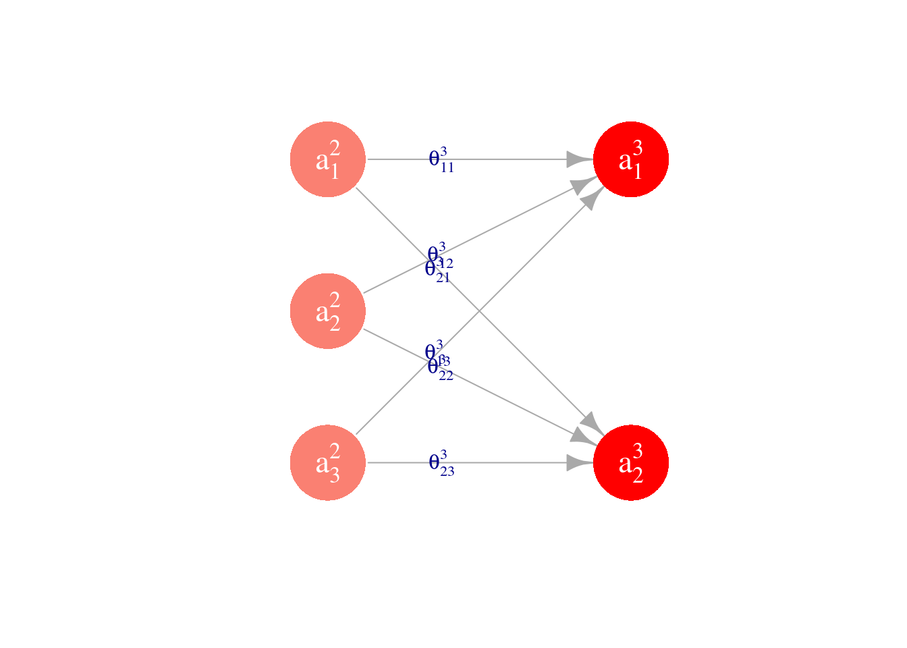
Como vimos en el ejemplo de arriba, para hacer cálculos en la red empezamos con la primera capa, hacemos combinaciones lineales y aplicamos nuestra función no lineal \(h\). Una vez que calculamos la segunda capa, podemos calcular la siguiente de la misma forma: combinaciones lineales y aplicación de \(h\). Y así sucesivamente hasta que llegamos a la capa final.
Notación
Sea \(L\) el número total de capas. En primer lugar, para un cierto caso de entrada \(x = (x_1,x_2,\ldots, x_p)\), denotamos por:
- \(a^{(l)}_j\) el valor que toma la unidad \(j\) de la capa \(l\), para \(j=0,1,\ldots, n_{l}\), donde \(n_l\) es el número de unidades de la capa \(l\).
- Ponemos \(a^{(l)}_0=1\) para lidiar con los sesgos.
- En particular, ponemos \(a^{(1)}_j = x_j\), que son los valores de las entradas (primera capa)
- Para clasificación binaria, la última capa solo tiene un elemento, que es \(p_1 = a^{(L)}\). Para un problema de clasificación en \(K>2\) clases, tenemos que la última capa es de tamaño \(K\): \(p_1 = a^{(L)}_1, p_2 = a^{(L)}_2,\ldots, p_K = a^{(L)}_K\)
Adicionalmente, escribimos
\(\theta_{i,k}^{(l)}=\) es el peso de entrada \(a_{k}^{(l-1)}\) de capa \(l-1\) en la entrada \(a_{i}^{(l)}\) de la capa \(l\).
Los sesgos están dados por \[\theta_{i,0}^{(l)}\]
Ejemplo
En nuestro ejemplo, tenemos que en la capa \(l=3\) hay dos unidades. Así que podemos calcular los valores \(a^{(3)}_1\) y \(a^{(3)}_2\). Están dados por
\[a_1^{(3)} = h(\theta_{1,0}^{(3)} + \theta_{1,1}^{(3)} a_1^{(2)}+ \theta_{1,2}^{(3)}a_2^{(2)}+ \theta_{1,3}^{(3)} a_3^{(2)})\] \[a_2^{(3)} = h(\theta_{2,0}^{(3)} + \theta_{2,1}^{(3)} a_1^{(2)}+ \theta_{2,2}^{(3)}a_2^{(2)}+ \theta_{2,3}^{(3)} a_3^{(2)})\]
Como se ilustra en la siguiente gráfica:
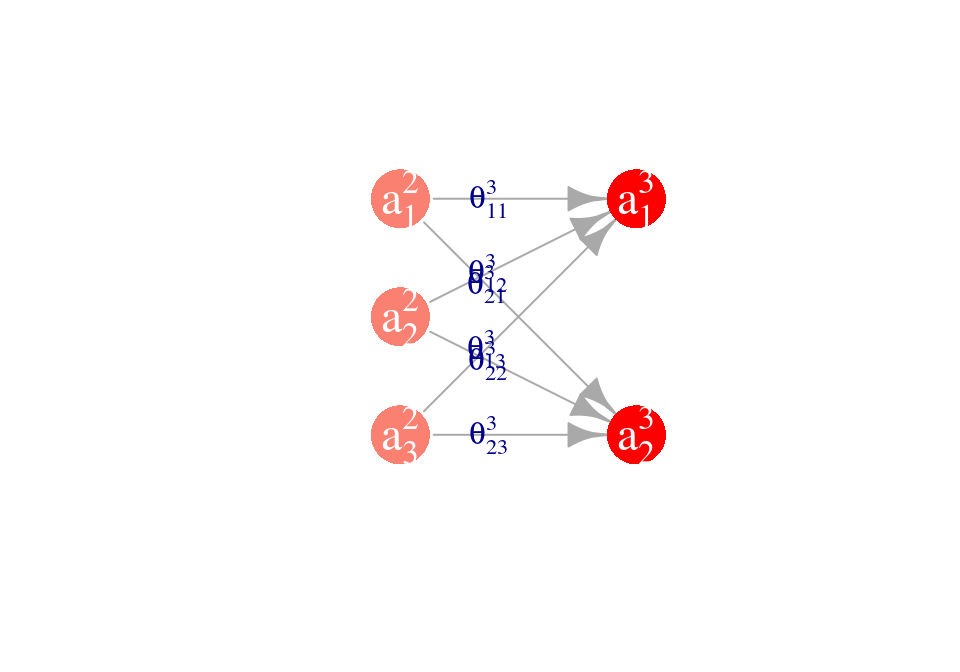
Para visualizar las ordenadas (que también se llaman sesgos en este contexto), ponemos \(a_0^2=1\). 
Ejemplo
Consideremos propagar con los siguientes pesos para capa 3 y valores de la capa 2 (en gris están los sesgos): 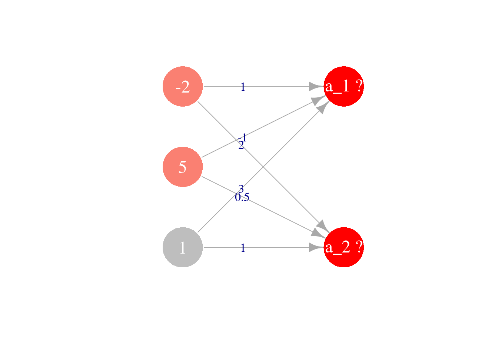
Que en nuestra notación escribimos como \[a^{(2)}_0 = 1, a^{(2)}_1 = -2, a^{(2)}_2 = 5\] y los pesos son, para la primera unidad: \[\theta^{(3)}_{1,0} = 3, \,\,\, \theta^{(3)}_{1,1} = 1,\,\,\,\theta^{(3)}_{1,2} = -1\] y para la segunda unidad \[\theta^{(3)}_{2,0} = 1, \,\,\, \theta^{(3)}_{2,1} = 2,\,\,\,\theta^{(3)}_{2,2} = 0.5\] Y ahora queremos calcular los valores que toman las unidades de la capa 3, que son \(a^{(3)}_1\) y \(a^{(3)}_2\)$
Para hacer feed forward a la siguiente capa, hacemos entonces
\[a^{(3)}_1 = h(3 + a^{(2)}_1 - a^{(2)}_2),\] \[a^{(3)}_2 = h(1 + 2a^{(2)}_1 + 0.5a^{(2)}_2),\]
Ponemos los pesos y valores de la capa 2 (incluyendo sesgo):
a_2 <- c(1,-2,5) # ponemos un 1 al principio para el sesgo
theta_2_1 = c(3,1,-1)
theta_2_2 = c(1,2,0.5)y calculamos
a_3 <- c(1, h(sum(theta_2_1*a_2)),h(sum(theta_2_2*a_2))) # ponemos un 1 al principio
a_3## [1] 1.00000000 0.01798621 0.377540677.4 Feed forward
Para calcular los valores de salida de una red a partir de pesos y datos de entrada, usamos el algoritmo feed-forward, calculando capa por capa.
Cálculo en redes: Feed-forward
Para la primera capa, escribimos las variables de entrada: \[a^{(1)}_j = x_j, j=1\ldots,n_1\] Para la primera capa oculta, o la segunda capa \[a^{(2)}_j = h\left( \theta_{j,0}^{(2)}+ \sum_{k=1}^{n_1} \theta_{j,k}^{(2)} a^{(1)}_k \right), j=1\ldots,n_2\] para la \(l\)-ésima capa: \[a^{(l)}_j = h\left( \theta_{j,0}^{(l)}+ \sum_{k=1}^{n_{l-1}} \theta_{j,k}^{(l)} a^{(l-1)}_k \right), j=1\ldots,n_{l}\] y así sucesivamente. Para la capa final o capa de salida (para problema binario), suponiendo que tenemos \(L\) capas (\(L-2\) capas ocultas): \[p_1 = h\left( \theta_{1,0}^{(L)}+ \sum_{k=1}^{n_{L-1}} \theta_{1,k}^{(L)} a^{(L-1)}_k \right).\]Nótese que entonces:
Cada capa se caracteriza por el conjunto de parámetros \(\Theta^{(l)}\), que es una matriz de \(n_l\times n_{l-1}\). La red completa entonces se caracteriza por:
- La estructura elegida (número de capas ocultas y número de nodos en cada capa oculta).
- Las matrices de pesos en cada capa \(\Theta^{(1)},\Theta^{(2)},\ldots, \Theta^{(L)}\)
Adicionalmente, escribimos en forma vectorial: \[a^{(l)} = (a^{(l)}_0, a^{(l)}_1, a^{(l)}_2, \ldots, a^{(l)}_{n_l})^t\]
Para calcular la salidas, igual que hicimos, antes, propagaremos hacia adelante los valores de las variables de entrada usando los pesos. Agregando entradas adicionales en cada capa \(a_0^{(l)}\), \(l=1,2,\ldots, L-1\), donde \(a_0^{l}=1\), y agregando a \(\Theta^{(l)}\) una columna con las ordenadas al origen (o sesgos) podemos escribir:
Feed-forward(matricial)
- Capa 1 (vector de entradas) \[ a^{(1)} = x\]
- Capa 2 \[ a^{(2)} = h(\Theta^{(1)}a^{(1)})\]
- Capa \(l\) (oculta) \[ a^{(l)} = h(\Theta^{(l)}a^{(l-1)})\]
- Capa de salida: \[a^{(L)}= p = h(\Theta^{(L)}a^{(L-1)})\] donde \(h\) se aplica componente a componente sobre los vectores correspondientes. Nótese que feed-foward consiste principalmente de mutliplicaciones de matrices con algunas aplicaciones de \(h\)
7.5 Backpropagation: cálculo del gradiente
Más adelante, para ajustar los pesos y sesgos de las redes (valores \(\theta\)), utilizaremos descenso en gradiente y otros algoritmos derivados del gradiente (descenso estocástico). En esta parte entonces veremos cómo calcular estos gradientes con el algoritmo de back-propagation, que es una aplicación de la regla de la cadena para derivar. Back-propagation resulta en una fórmula recursiva donde propagamos errores de la red como gradientes desde el final de red (capa de salida) hasta el principio, capa por capa.
Recordamos la devianza (con regularización ridge) es
\[D = -\frac{2}{n}\sum_{i=1}^n y_i\log(p_1(x_i)) +(1-y_i)\log(1-p_1(x_i)) + \lambda \sum_{l=2}^{L} \sum_{k=1}^{n_{l-1}} \sum_{j=1}^{n_l}(\theta_{j,k}^{(l)})^2.\]
Queremos entonces calcular las derivadas de la devianza con respecto a cada parámetro \(\theta_{j,k}^{(l)}\). Esto nos proporciona el gradiente para nuestro algoritmo de descenso.
Consideramos aquí el problema de clasificación binaria con devianza como función de pérdida, y sin regularización. La parte de la parcial que corresponde al término de regularización es fácil de agregar al final.
Recordamos también nuestra notación para la función logística (o sigmoide):
\[h(z)=\frac{1}{1+e^{-z}}.\] Necesitaremos su derivada, que está dada por (cálculala): \[h'(z) = h(z)(1-h(z))\]
7.5.1 Cálculo para un caso de entrenamiento
Como hicimos en regresión logística, primero simplificamos el problema y consideramos calcular las parciales para un solo caso de entrenamiento \((x,y)\): \[ D= -\left ( y\log (p_1(x)) + (1-y)\log (1-p_1(x))\right) . \]
Después sumaremos sobre toda la muestra de entrenamiento. Entonces queremos calcular \[\frac{\partial D}{\partial \theta_{j,k}^{(l)}}\]
Y escribiremos, con la notación de arriba, \[a^{(l)}_j = h(z^{(l)}_j)\] donde \[z^{(l)} = \Theta^{l} a^{(l-1)},\] que coordenada a coordenada se escribe como \[z^{(l)}_j = \sum_{k=0}^{n_{l-1}} \theta_{j,k}^{(l)} a^{(l-1)}_k\]
Paso 1: Derivar respecto a capa \(l\)
Como los valores de cada capa determinan los valores de salida y la devianza, podemos escribir (recordemos que \(a_0^{(l)}=1\) es constante): \[D=D(a_0^{(l)},a_1^{(l)},a_2^{(l)},\ldots, a_{n_{l}}^{(l)})=D(a_1^{(l)},a_2^{(l)},\ldots, a_{n_{l}}^{(l)})\]
Así que por la regla de la cadena para varias variables: \[\frac{\partial D}{\partial \theta_{j,k}^{(l)}} = \sum_{t=1}^{n_{l}} \frac{\partial D}{\partial a_t^{l}}\frac{\partial a_t^{(l)}} {\partial \theta_{j,k}^{(l)} }\]
Pero si vemos dónde aparece \(\theta_{j,k}^{(l)}\) en la gráfica de la red:
\[ \cdots a^{(l-1)}_k \xrightarrow{\theta_{j,k}^{(l)}} a^{(l)}_j \cdots \rightarrow D\] Entonces podemos concluir que \(\frac{\partial a_t^{(l)}}{\partial \theta_{j,k}^{(l)}} =0\) cuando \(t\neq j\) (pues no dependen de \(\theta_{j,k}^{(l)}\)),
de lo que se concluye que, para toda \(j=1,2,\ldots, n_{l+1}, k=0,1,\ldots, n_{l}\) \[\begin{equation} \frac{\partial D}{\partial \theta_{j,k}^{(l)}} = \frac{\partial D}{\partial a_j^{(l)}}\frac{\partial a_j^{(l)}}{\partial \theta_{j,k}^{(l)} } , \tag{7.1} \end{equation}\] y como \[a_j^{(l)} = h(z_j^{(l)}) = h\left (\sum_{k=0}^{n_{l-1}} \theta_{j,k}^{(l)} a^{(l-1)}_k \right )\] Tenemos por la regla de la cadena que \[\begin{equation} \frac{\partial a_j^{(l)}}{\partial \theta_{j,k}^{(l)} } = h'(z_j^{(l)})a_k^{(l-1)}. \end{equation}\]Esta última expresión podemos calcularla pues sólo requiere la derivada de \(h\) y los valores de los nodos obtenidos en la pasada de feed-forward.
Paso 2: Derivar con respecto a capa \(l+1\)
Así que sólo nos queda calcular las parciales (\(j = 1,\ldots, n_l\)) \[\frac{\partial D}{\partial a_j^{(l)}}\]
Para obtener una fórmula recursiva para esta cantidad (hacia atrás), aplicamos otra vez regla de la cadena, pero con respecto a la capa \(l+1\) (ojo: queremos obtener una fórmula recursiva!):
\[\frac{\partial D}{\partial a_j^{(l)}}= \sum_{s=1}^{n_l} \frac{\partial D}{\partial a_s^{(l+1)}}\frac{\partial a_s^{(l+1)}}{\partial a_j^{(l)}},\]
que se puede entender a partir de este diagrama: 
Nótese que la suma empieza en \(s=1\), no en \(s=0\), pues \(a_0^{(l+1)}\) no depende de \(a_k^{(l)}\).
En este caso los elementos de la suma no se anulan necesariamente. Primero consideramos la derivada de:
\[\frac{\partial a_s^{(l+1)}}{\partial a_j^{(l)}}=h'(z_s^{(l+1)})\theta_{s,j}^{(l+1)},\]
de modo que
\[\frac{\partial D}{\partial a_j^{(l)}}= \sum_{s=1}^{n_l} \frac{\partial D}{\partial a_s^{(l+1)}} h'(z_s^{(l+1)})\theta_{s,j}^{(l+1)}.\]
Denotaremos \[\delta_s^{ (l+1)}=\frac{\partial D}{\partial a_s^{(l+1)}} h'(z_s^{(l+1)})\]
de manera que la ecuación anterior es \[\begin{equation} \frac{\partial D}{\partial a_j^{(l)}} = \sum_{s=1}^{n_{l+1}} \delta_s^{(l+1)}\theta_{s,j}^{(l+1)}. \tag{7.2} \end{equation}\]Observación Nótese que \(\delta_s^{(l)} =\frac{\partial D}{\partial z_s^{(l+1)}}\), que nos dice a dónde tenemos que mover la entrada derivada \(z_s^{(l+1)}\) para reducir el error \(D\). Como \(z_s^{(l+1)}\) es una entrada derivada que depende de parámetros \(\theta\), esta cantidad también nos ayudará a entender cómo debemos cambiar los parámetros \(\theta\) para disminuir el error.
Paso 3: Construir fórmula recursiva para \(\delta\)
Lo único que nos falta calcular entonces son las \(\delta_s^{(l)}\).
Tenemos que si \(l=2,\ldots,L-1\), entonces podemos escribir (usando (7.2)) como fórmula recursiva:
\[\begin{equation} \delta_j^{(l)} = \frac{\partial D}{\partial a_j^{l}} h'(z_j^{(l)}) = \left (\sum_{s=1}^{n_l} \delta_s^{(l+1)} \theta_{s,j}^{(l+1)}\right ) h'(z_j^{(l)}), \tag{7.3} \end{equation}\]para \(j=1,2,\ldots, n_{l}\).
y para la última capa, tenemos que (demostrar!)
\[\delta_1^{(L)}=p - y.\]
Finalmente, usando (7.1), obtenemos \[\frac{\partial D}{\partial \theta_{j,k}^{(l)}} = \delta_j^{(l)}a_k^{(l-1)},\]
y con esto ya podemos hacer backpropagation para calcular el gradiente sobre cada caso de entrenamiento, y solo resta acumular para obtener el gradiente sobre la muestra de entrenamiento.
Muchas veces es útil escribir una versión vectorizada (importante para implementar):
Paso 4: Versión matricial
Ahora podemos escribir estas ecuaciones en forma vectorial. En primer lugar, \[\delta^{(L)}=p-y.\] Y además se puede ver de la ecuación (7.3) que (\(\Theta_{*}^{(l+1)}\) denota la matriz de pesos sin la columna correspondiente al sesgo):
\[\begin{equation} \delta^{(l)}=\left( \Theta_{*}^{(l+1)} \right)^t\delta^{(l+1)} \circ h'(z^{(l)}) \tag{7.4} \end{equation}\]donde \(\circ\) denota el producto componente a componente.
Ahora todo ya está calculado. Lo interesante es que las \(\delta^{(l)}\) se calculan de manera recursiva.
7.5.2 Algoritmo de backpropagation
Backpropagation Para problema de clasificación con regularización $0 $. Para \(i=1,\ldots, N\), tomamos el dato de entrenamiento \((x^{(i)}, y^{(i)})\) y hacemos:
- Ponemos \(a^{(1)}=x^{(i)}\) (vector de entradas, incluyendo 1).
- Calculamos \(a^{(2)},a^{(3)},\ldots, a^{(L)}\) usando feed forward para la entrada \(x^{(i)}\)
- Calculamos \(\delta^{(L)}=a^{ (L)}-y^{(i)}\), y luego \(\delta^{(L-1)},\ldots, \delta^{(2)}\) según la recursión (7.3).
- Acumulamos \(\Delta_{j,k}^{(l)}=\Delta_{j,k}^{(l)} + \delta_j^{(l)}a_k^{(l-1)}\).
- Finalmente, ponemos, si \(k\neq 0\), \[D_{j,k}^{(l)} = \frac{2}{N}\Delta_{j,k}^{(l)} + 2\lambda\theta_{j,k}^{(l)}\] y si \(k=0\), \[D_{j,k}^{(l)} = \frac{2}{N}\Delta_{j,k}^{(l)} .\] Entonces: \[D_{j,k}^{(l)} =\frac{\partial D}{\partial \theta_{j,k}^{(l)}}.\]
7.6 Ajuste de parámetros (introducción)
Consideramos la versión con regularización ridge (también llamada L2) de la devianza de entrenamiento como nuestro función objetivo:
Veremos el proceso de ajuste, selección de arquitectura, etc. más adelante. Por el momento hacemos unas observaciones acerca de este problema de minimización:
Hay varios algoritmos para minimizar esta devianza, algunos avanzados incluyendo información de segundo orden (como Newton), pero actualmente las técnicas más populares, para redes grandes, están derivadas de descenso en gradiente. Más específicamente, una variación, que es descenso estocástico.
Que el algoritmo depende principalmente de multiplicaciones de matrices y acumulaciones implica que puede escalarse de diversas maneras. Una es paralelizando sobre la muestra de entrenamiento (y acumular acumulados al final), pero quizá la más importante actualmente es la de multiplicaciones de matrices.
Para redes neuronales, el gradiente se calcula con un algoritmo que se llama back-propagation, que es una aplicación de la regla de la cadena para propagar errores desde la capa de salida a lo largo de todas las capas para ajustar los pesos y sesgos.
En estos problemas no buscamos el mínimo global, sino un mínimo local de buen desempeño. Puede haber múltiples mínimos, puntos silla, regiones relativamente planas, precipicios (curvatura alta). Todo esto dificulta el entrenamiento de redes neuronales grandes. Para redes grandes, ni siquiera esperamos a alcanzar un mínimo local, sino que nos detenemos prematuramente cuando obtenemos el mejor desempeño posible.
Nótese que la simetría implica que podemos obtener la misma red cambiando pesos entre neuronas y las conexiones correspondientes. Esto implica que necesariamente hay varios mínimos.
Para este problema, no tiene sentido comenzar las iteraciones con todos los pesos igual a cero, pues las unidades de la red son simétricas: no hay nada que diferencie una de otra si todos los pesos son iguales. Esto quiere decir que si iteramos, ¡todas las neuronas van a aprender lo mismo!
Es importante no comenzar valores de los pesos grandes, pues las funciones logísticas pueden quedar en regiones planas donde la minimización es lenta, o podemos tener gradientes demasiado grandes y produzcan inestabilidad en el cálculo del gradiente.
Generalmente los pesos se inicializan al azar con variables independientes gaussianas o uniformes centradas en cero, y con varianza chica (por ejemplo \(U(-0.5,0.5)\)). Una recomendación es usar \(U(-1/\sqrt(m), 1/\sqrt(m))\) donde \(m\) es el número de entradas. En general, hay que experimentar con este parámetro.
El proceso para ajustar una red es entonces:
- Definir número de capas ocultas, número de neuronas por cada capa, y un valor del parámetro de regularización. Estandarizar las entradas.
- Seleccionar parámetros al azar para \(\Theta^{(2)},\Theta^{(3)},\ldots, \Theta^{(L)}\). Se toman, por ejemplo, normales con media 0 y varianza chica.
- Correr un algoritmo de minimización de la devianza mostrada arriba.
- Verificar convergencia del algoritmo a un mínimo local (o el algoritmo no está mejorando).
- Predecir usando el modelo ajustado.
Finalmente, podemos probar distintas arquitecturas y valores del parámetros de regularización, para afinar estos parámetros según validación cruzada o una muestra de validación.
7.6.1 Ejemplo
Consideramos una arquitectura de dos capas para el problema de diabetes
if(Sys.info()['nodename'] == 'vainilla.local'){
# esto es por mi instalación particular de tensorflow - típicamente
# no es necesario que corras esta línea.
#Sys.setenv(TENSORFLOW_PYTHON="/usr/local/bin/python")
}
library(keras)##
## Attaching package: 'keras'## The following objects are masked from 'package:igraph':
##
## %<-%, normalizeEscalamos y preparamos los datos:
library(readr)
library(tidyr)
library(dplyr)
diabetes_ent <- MASS::Pima.tr
diabetes_pr <- MASS::Pima.te
set.seed(293)
x_ent <- diabetes_ent %>% select(-type) %>% as.matrix
x_ent_s <- scale(x_ent)
x_valid <- diabetes_pr %>% select(-type) %>% as.matrix
x_valid_s <- x_valid %>%
scale(center = attr(x_ent_s, 'scaled:center'), scale = attr(x_ent_s, 'scaled:scale'))
y_ent <- as.numeric(diabetes_ent$type == 'Yes')
y_valid <- as.numeric(diabetes_pr$type == 'Yes')Para definir la arquitectura de dos capas con:
- 10 unidades en cada capa
- función de activación sigmoide,
- regularización L2 (ridge),
- salida logística (\(p_1\)), escribimos:
set.seed(9232)
modelo_tc <- keras_model_sequential()
# no es necesario asignar a nuevo objeto, modelo_tc es modificado al agregar capas
modelo_tc %>%
layer_dense(units = 10, activation = 'sigmoid',
kernel_regularizer = regularizer_l2(l = 1e-4),
kernel_initializer = initializer_random_uniform(minval = -0.5, maxval = 0.5),
input_shape=7) %>%
layer_dense(units = 10, activation = 'sigmoid',
kernel_regularizer = regularizer_l2(l = 1e-4),
kernel_initializer = initializer_random_uniform(minval = -0.5, maxval = 0.5)) %>%
layer_dense(units = 1, activation = 'sigmoid',
kernel_regularizer = regularizer_l2(l = 1e-4),
kernel_initializer = initializer_random_uniform(minval = -0.5, maxval = 0.5)
)Ahora difinimos la función de pérdida (devianza es equivalente a entropía cruzada binaria), y pedimos registrar porcentaje de correctos (accuracy) y compilamos en tensorflow:
modelo_tc %>% compile(
loss = 'binary_crossentropy',
optimizer = optimizer_sgd(lr = 0.5),
metrics = c('accuracy','binary_crossentropy'))Iteramos con descenso en gradiente y monitoreamos el error de validación. Hacemos 100 iteraciones de descenso en gradiente (épocas=100)
iteraciones <- modelo_tc %>% fit(
x_ent_s, y_ent,
#batch size mismo que nrow(x_ent_s) es descenso en grad.
epochs = 500, batch_size = nrow(x_ent_s),
verbose = 0,
validation_data = list(x_valid_s, y_valid)
)score <- modelo_tc %>% evaluate(x_valid_s, y_valid)
score## $loss
## [1] 0.435365
##
## $acc
## [1] 0.7921687
##
## $binary_crossentropy
## [1] 0.43099tab_confusion <- table(modelo_tc %>% predict_classes(x_valid_s),y_valid)
tab_confusion## y_valid
## 0 1
## 0 194 40
## 1 29 69prop.table(tab_confusion, 2)## y_valid
## 0 1
## 0 0.8699552 0.3669725
## 1 0.1300448 0.6330275Es importante monitorear las curvas de aprendizaje (entrenamiento y validación) para diagnosticar mejoras:
df_iteraciones <- as.data.frame(iteraciones)
ggplot(df_iteraciones, aes(x=epoch, y=value, colour=data, group=data)) +
geom_line() + geom_point() + facet_wrap(~metric, ncol=1, scales = 'free')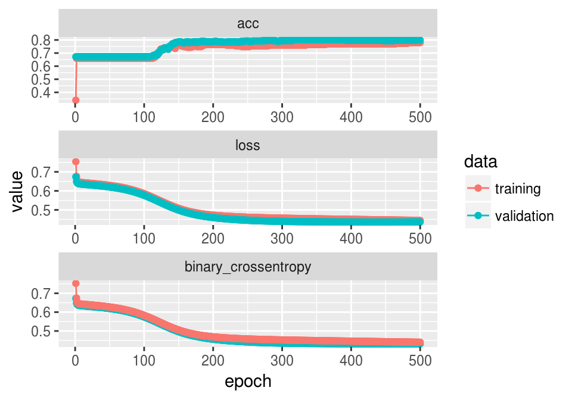
Ejercicio
Corre el ejemplo anterior con distintos parámetros de tasa de aprendizaje, número de unidades en las capas de intermedia y regularización (cambia arriba verbose=1 para monitorear al correr).
7.6.2 Hiperparámetros: búsqueda manual
En búsqueda manual intentamos ajustar los parámetros haciendo experimentos sucesivos, monitoreando el error de entrenamiento y de validación. Los principios básicos que tenemos que entender son los de sesgo (rigidez) y varianza (flexibilidad) de los modelos y cómo se comportan estas cantidades cuando cambiamos parámetros, aunque es también importante experiencia e intuición. No hay una receta para hacer este proceso y garantizar llegar a una buena solución.
Sin embargo, una guías para el proceso son las siguientes:
- Comenzamos poniendo valores usuales para los parámetros (que sabemos de ejemplos similares, o valores como 0.0001 para regularización, 0.1 para tasa de aprendizaje, etc.)
- Corremos algunas iteraciones y observamos en primer lugar que la tasa de aprendizaje sea apropiada (es el parámetro más importante!): queremos poner valores tan altos como sea posible sin que haya oscilaciones grandes del error de entrenamiento. Muchas veces, con una tasa demasiado alta, rápidamente llegamos a una región mala con gradientes bajos donde no podemos escapar (por ejemplo, con unidades saturadas) y parece que el modelo no aprende. Una tasa baja da convergencia muy lenta.
- Otra razón por la que la red puede no aprender es por gradientes se anulan en unidades saturadas. Si nos movemos a regiones donde valores de la salida de una capa son muy positivos o negativos, podemos saturar las unidades sigmoides (que son planas para valores muy positivos o negativos). Este se puede componer poniendo valores más chicos para la inicialización de pesos, o reducir la tasa de aprendizaje. Para redes de muchas capas, los gradientes también pueden explotar (valores muy grandes cuando hacemos backprop sobre la red) y llevarnos a regiones malas de saturación.
- Si el error de entrenamiento es muy alto y similar al de validación, el modelo quizá no tiene capacidad de aprender por sesgo (rigidez). Podemos incrementar el número de unidades, disminuir el valor de regularización (penalización L2 ), poner menos capas. También puede ser que la tasa de aprendizaje sea demasiado baja, y nos estamos quedando “atorados” en una región relativamente plana donde los gradientes son chicos.
- Si el error de entrenamiento es bajo, pero el de validación es alto, entonces quizá el modelo es demasiado flexible y está sobreajustando. Podemos regularizar más incrementando la penalización L2, incrementar el número de unidades por capa o de capas.
- Para redes neuronales grandes y problemas con ruido bajo, una estrategia es intentar obtener un error lo más chico posible para entrenamiento (la red aprende y/o memoriza), y después se afina para que la generalización (error de validación) sea buena.
- Podemos pensar que el error de validación tiene dos partes: el error de entrenamiento y el margen que hay entre error de entrenamiento y validación. Para reducir el error de validación podemos intentar reducir el error de entrenamiento y/o reducir el margen. Generalmente hay que ir balanceando flexibilidad con rigidez a través de varios parámetros para terminar con un buen ajuste.
Ejercicio
Haz algunos experimentos con las guías de arriba para el ejemplo de spam. Usa el script scripts/ejercicio-spam-hiperparametros.R
7.6.3 Hiperparámetros: búsqueda en grid
Los hiperparámetros de un modelo son los que no se aprenden por el algoritmo principal. Por ejemplo, en regresión regularizada, los coeficientes son parámetros (se aprenden por descenso en gradiente), pero el parámetro de regularización \(\lambda\) es un hiperparámetro. En redes neuronales tenemos más hiperparámetros: por ejemplo el número de capas, el número de unidades por capa, y el parámetro de regularización.
La primera técnica para poner los hiperparámetros es búsqueda en grid. En este método escogemos los valores de cada hiperparámetro y ajustamos modelos para todas las posibles combinaciones.
hiperparams <- expand.grid(lambda = 10^seq(-9,-1, 1), n_capa = c(5, 10, 20, 50),
lr = c(0.1, 0.5, 0.9), n_iter = 1000,
init_pesos = c(0.5), stringsAsFactors = FALSE)
hiperparams$corrida <- 1:nrow(hiperparams)
head(hiperparams)## lambda n_capa lr n_iter init_pesos corrida
## 1 1e-09 5 0.1 1000 0.5 1
## 2 1e-08 5 0.1 1000 0.5 2
## 3 1e-07 5 0.1 1000 0.5 3
## 4 1e-06 5 0.1 1000 0.5 4
## 5 1e-05 5 0.1 1000 0.5 5
## 6 1e-04 5 0.1 1000 0.5 6nrow(hiperparams)## [1] 108correr_modelo <- function(params, x_ent_s, y_ent, x_valid_s, y_valid){
modelo_tc <- keras_model_sequential()
u <- params[['init_pesos']]
modelo_tc %>%
layer_dense(units = params[['n_capa']], activation = 'sigmoid',
kernel_regularizer = regularizer_l2(l = params[['lambda']]),
kernel_initializer = initializer_random_uniform(minval = -u,
maxval = u),
input_shape=7) %>%
# layer_dense(units = params[['n_capa']], activation = 'sigmoid',
# kernel_regularizer = regularizer_l2(l = params[['lambda']]),
# kernel_initializer = initializer_random_uniform(minval = -u,
# maxval = u)) %>%
layer_dense(units = 1, activation = 'sigmoid',
kernel_regularizer = regularizer_l2(l = params[['lambda']]),
kernel_initializer = initializer_random_uniform(minval = -u,
maxval = u))
modelo_tc %>% compile(
loss = 'binary_crossentropy',
optimizer = optimizer_sgd(lr =params[['lr']]),
metrics = c('accuracy', 'binary_crossentropy')
)
history <- modelo_tc %>% fit(
x_ent_s, y_ent,
epochs = params[['n_iter']], batch_size = nrow(x_ent_s),
verbose = 0 )
score <- modelo_tc %>% evaluate(x_valid_s, y_valid)
print(score)
score
}set.seed(34321)
nombres <- names(hiperparams)
if(!usar_cache) {
res <- lapply(1:nrow(hiperparams), function(i){
params <- as.vector(hiperparams[i,])
#names(params) <- nombres
#print(params$corrida)
salida <- correr_modelo(params, x_ent_s, y_ent, x_valid_s, y_valid)
salida
})
hiperparams$binary_crossentropy <- sapply(res, function(item){ item$binary_crossentropy })
hiperparams$loss <- sapply(res, function(item){ item$loss })
hiperparams$acc <- sapply(res, function(item){ item$acc })
saveRDS(hiperparams, file = './cache_obj/diabetes-grid.rds')
} else {
hiperparams <- readRDS(file = './cache_obj/diabetes-grid.rds')
}Ordenamos del mejor modelo al peor según la pérdida:
arrange(hiperparams, binary_crossentropy) %>% head(10)## lambda n_capa lr n_iter init_pesos corrida binary_crossentropy
## 1 1e-09 10 0.1 1000 0.5 10 0.4288144
## 2 1e-08 5 0.1 1000 0.5 2 0.4298817
## 3 1e-08 20 0.1 1000 0.5 20 0.4303028
## 4 1e-08 10 0.1 1000 0.5 11 0.4303874
## 5 1e-07 10 0.1 1000 0.5 12 0.4305910
## 6 1e-06 20 0.1 1000 0.5 22 0.4312452
## 7 1e-05 10 0.1 1000 0.5 14 0.4312888
## 8 1e-07 20 0.1 1000 0.5 21 0.4320093
## 9 1e-07 50 0.1 1000 0.5 30 0.4320917
## 10 1e-06 50 0.1 1000 0.5 31 0.4321587
## loss acc
## 1 0.4288144 0.7981928
## 2 0.4298819 0.8012048
## 3 0.4303031 0.8012048
## 4 0.4303876 0.8012048
## 5 0.4305927 0.8042169
## 6 0.4312678 0.8012048
## 7 0.4314596 0.8012048
## 8 0.4320115 0.8042169
## 9 0.4320959 0.8012048
## 10 0.4321982 0.7981928Y podemos estudiar la dependencia de la pérdida según distintos parámetros (ojo: los resultados son ruidosos por la muestra de validación relativamente chica y por el proceso de ajuste. Por ejemplo, los pesos aleatorios al arranque).
ggplot(hiperparams, aes(x = lambda, y = binary_crossentropy,
group=n_capa, colour=factor(n_capa))) +
geom_line() + geom_point() + facet_wrap(~lr, ncol = 2) +
scale_x_log10() 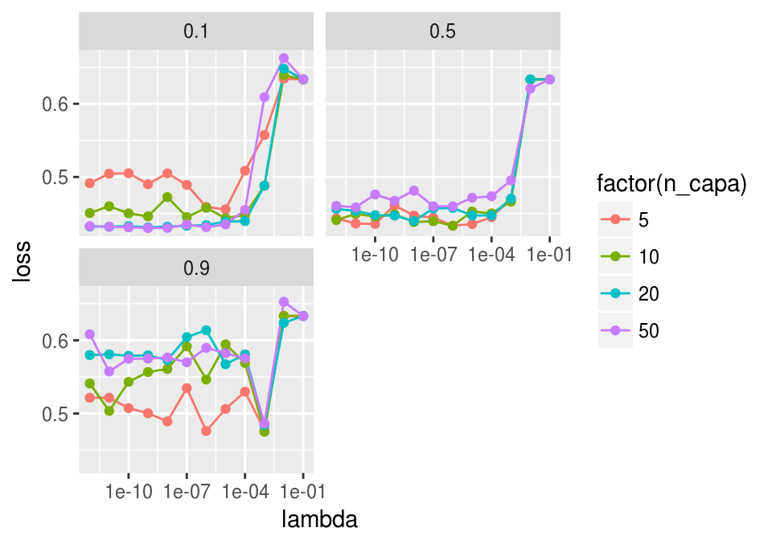
ggplot(filter(hiperparams, lr==0.1, n_capa > 10, lambda < 1e-4),
aes(x = lambda, y = binary_crossentropy,
group=n_capa, colour=factor(n_capa))) +
geom_line() + geom_point() + facet_wrap(~lr, ncol = 2) + scale_x_log10() 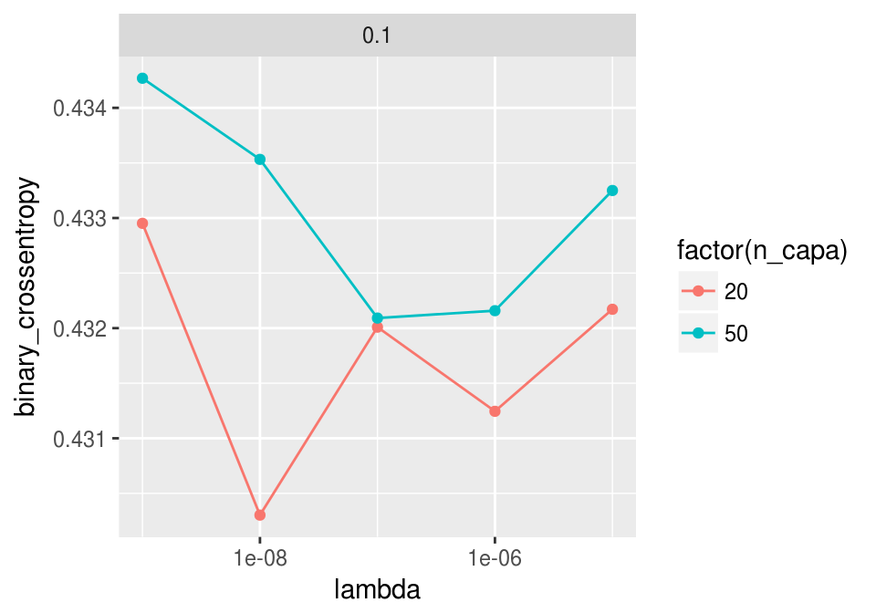
Por ejemplo:
- lambda mayor a 0.001 es demasiado grande para cualquiera de estos modelo.
- la tasa de aprendizaje parece ser mejor alrededor de 0.1 para estos modelos - esto puede ser consecuencia de la regularización por pararnos antes de sobreajuste.
- Nótese por ejemplo que desperdiciamos iteraciones cuando la regularización es alta, y el rango de número de unidades que probamos tampoco parece producir muchas diferencias
7.6.4 Hiperparámetros: búsqueda aleatoria
En el ejemplo anterior pudimos ver que muchas de las iteraciones son iteraciones desperdiciadas. Por ejemplo, el mal desempeño de un parámetro dado produce que no importen los valores de los otros parámetros. Sin embargo, corremos todas las combinaciones de los otros parámetros, las cuales todas se desempeñan mal.
Especialmente cuando tenemos muchos parámetros, es más hacer eficiente hacer búsqueda aleatoria. Para hacer esto simulamos al azar valores de los parámetros a partir de una distribución de valores que queremos probar.
Por ejemplo, para el número de unidades podríamos usar
runif(1, 20, 200)## [1] 30.75713y para la regularización (donde queremos probar varios órdenes de magnitud) podríamos usar
exp(runif(1, -8,-1))## [1] 0.0006036878n_pars <- 100
set.seed(913)
if(!usar_cache){
hiperparams <- data_frame(lambda = 10^(runif(n_pars, -10, -1)),
n_capa = sample(c(2, 5, 10, 20, 50), n_pars, replace = T),
lr = runif(n_pars, 0.01, 0.9), n_iter = 1000,
init_pesos = runif(n_pars, 0.2,0.7))
hiperparams$corrida <- 1:nrow(hiperparams)
res_aleatorio <- lapply(1:nrow(hiperparams), function(i){
params <- as.vector(hiperparams[i,])
salida <- correr_modelo(params, x_ent_s, y_ent, x_valid_s, y_valid)
salida
})
hiperparams$loss <- sapply(res_aleatorio, function(item){ item$loss})
hiperparams$binary_crossentropy <- sapply(res_aleatorio, function(item){ item$binary_crossentropy})
hiperparams$acc <- sapply(res_aleatorio, function(item){ item$acc})
saveRDS(hiperparams, file = './cache_obj/diabetes-aleatorio.rds')
} else {
hiperparams <- readRDS(file = './cache_obj/diabetes-aleatorio.rds')
}arrange(hiperparams, binary_crossentropy)## # A tibble: 100 x 9
## lambda n_capa lr n_iter init_pesos corrida loss
## <dbl> <dbl> <dbl> <dbl> <dbl> <int> <dbl>
## 1 1.557467e-08 5 0.39449976 1000 0.3677915 19 0.4278859
## 2 1.778047e-09 5 0.24924917 1000 0.5504638 2 0.4296006
## 3 4.801019e-04 10 0.17805261 1000 0.3146846 67 0.4382751
## 4 4.089486e-10 20 0.32910360 1000 0.4952716 37 0.4316516
## 5 6.355566e-07 50 0.09925637 1000 0.6199004 69 0.4319281
## 6 3.474533e-07 10 0.31243237 1000 0.4618183 7 0.4322901
## 7 3.135937e-10 20 0.13151933 1000 0.2840034 55 0.4323465
## 8 6.467834e-05 20 0.12685442 1000 0.5140470 23 0.4340249
## 9 2.284078e-05 20 0.24400867 1000 0.5521355 68 0.4332621
## 10 1.391978e-08 10 0.08317381 1000 0.5076250 60 0.4326821
## # ... with 90 more rows, and 2 more variables: binary_crossentropy <dbl>,
## # acc <dbl>hiperparams$lr_grupo <- cut(hiperparams$lr, breaks=c(0,0.1,0.25,0.5, 0.75,1))
hiperparams$init_grupo <- cut(hiperparams$init_pesos, breaks=c(0.2,0.5,0.8))
ggplot(hiperparams, aes(x = lambda, y = binary_crossentropy,
colour=lr_grupo,
size = n_capa)) +
geom_point(alpha = 0.75) + scale_x_log10() +
facet_wrap(~init_grupo, ncol=1)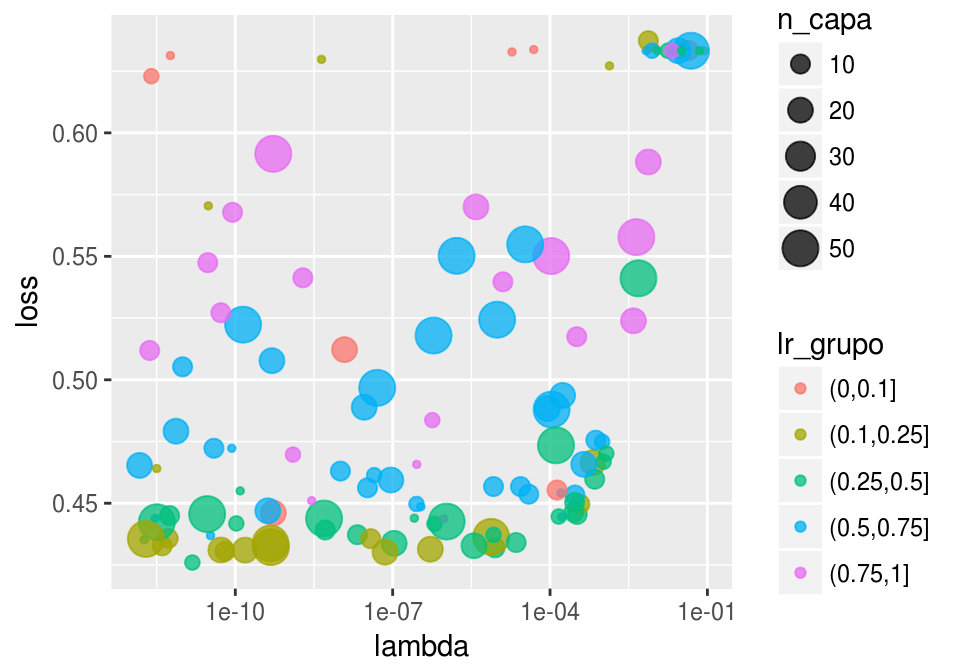
7.6.4.1 Nota (entrenamiento en keras)
Al entrenar con keras, nótese que
- El valor de loss (pérdida de entrenamiento) incluye regularización (ridge, sin unidades dropout), pero el valor de val_loss no los incluye.
- El valor de loss se calcula como el promedio de pérdidas sobre los minilotes. El valor de val_loss se calcula con los parámetros obtenidos al final de la época.
- Por tanto, loss tiende a ser menor que lo que obtendríamos evaluando la pérdida de entrenamiento al final de la época, y puede ser en ocasiones más grande que val_loss.
- Si queremos ver valores totalmente comparables, podemos obtener el score del modelo, al final del entrenamiento, tanto para entrenamiento como prueba.
- Adicionalmente, diferencias en las muestras de entrenamiento y validación pueden producir también valores de validación ligaramente menores de entrenamiento. Este efecto puede ser más grande si se trata de muestras relativamente chicas de entrenamiento/prueba.
Tarea (para 25 de septiembre)
- Instalar (keras para R)[https://keras.rstudio.com] (versión CPU).
- Suscribirse a kaggle (pueden ser equipos de 2 máximo, entonces les conviene suscribirse como un equipo).
- Hacer el ejercicio de arriba 7.1.0.1
Tarea (2 de octubre)
Considera la siguiente red para un problema de clasificación binaria:
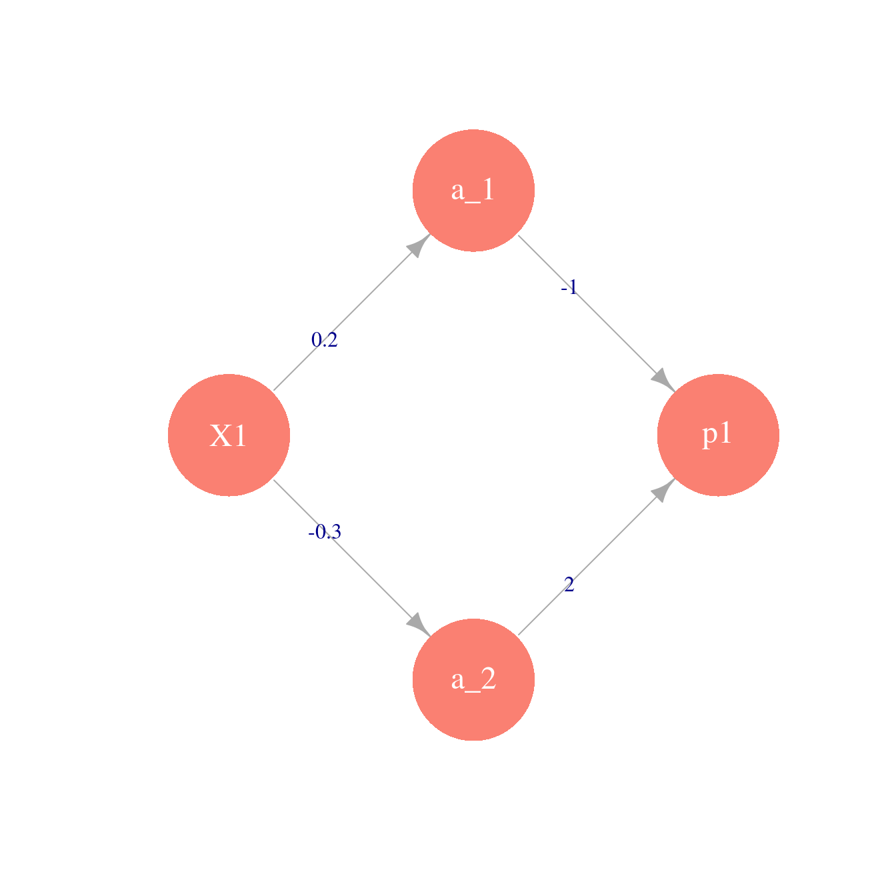
Supón que los sesgos son 0 para la unidad \(a_1\), 0 para la unidad \(a_2\) y -0.5 para la unidad \(p\).
- Escribe cada \(\theta_{i,j}^{(l)}\) según la notación de clase e identifica su valor. Por ejemplo, tenemos que \(\theta^{(2)}_{1,0} = 0\) (tienes que escribir 7 valores como este).
- Supón que tenemos un caso (observación) con \((x, p)=(1, 0)\). ¿Qué es \(a_1^{(1)}\)? Haz forward feed para calcular los valores de \(a_1^{(2)}\), \(a_1^{(2)}\) y \(p=a_1^{(3)}\).
- Calcula la devianza para el caso \((x, p)=(1, 0)\)
- Según el cálculo que hiciste en 3, intuitivamente, ¿qué conviene hacer con los dos últimos pesos de la última capa para reducir la devianza? ¿Incrementarlos o disminuirlos?
- Error en la última capa (3): Calcula \(\delta^{(3)}_1\)
- Calcula con backpropagation la derivada \(\frac{\partial D}{\partial \theta^{(3)}_{1,1}}\). El resultado coincide con tu intuición del inciso 4? Puedes intentar calcular directamente esta derivada también, con el método que quieras.
- Error en capa 2: Calcula \(\delta^{(2)}_1\) y \(\delta^{(2)}_2\), según la fórmula (7.3).
- Utiliza el inciso anterior para calcular \(\frac{\partial D}{\partial \theta_{1,0}^{(2)}}\), \(\frac{\partial D}{\partial \theta_{1,1}^{(2)}}\), \(\frac{\partial D}{\partial \theta_{2,0}^{(2)}}\) y \(\frac{\partial D}{\partial \theta_{2,1}^{(2)}}\) . ¿Puedes explicar los signos que obtuviste para estas derivadas (tip: tienes qué ver también que sucede en la siguiente capa)?